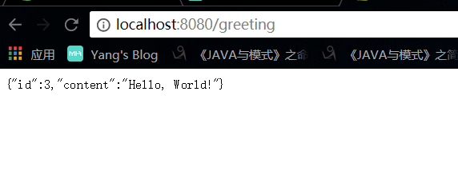
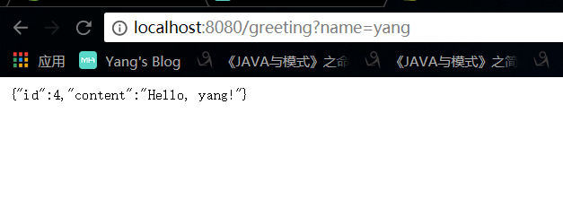

用maven+springboot搭建一个简单的restful web service.
一.目标:
在这里会创建一个服务,接收如下请求
1
| http://localhost:8080/greeting
|
并返回如下的json对象.
1
| {"id":"1","content":"Hello World"}
|
当然,在上面请求中,我们也可以添加参数
1
| http://localhost:8080/greeting?name=yang
|
然后返回结果为
1
| {"id":"1","content":"Hello yang"}
|
二.maven依赖
1
2
3
4
5
6
7
8
9
10
11
12
13
14
15
16
17
18
19
20
21
22
23
24
25
26
27
28
29
30
31
32
33
34
35
36
37
38
39
40
41
42
43
44
45
46
47
48
49
50
51
| <properties>
<project.build.sourceEncoding>UTF-8</project.build.sourceEncoding>
<maven.compiler.source>1.7</maven.compiler.source>
<maven.compiler.target>1.7</maven.compiler.target>
<java.version>1.8</java.version>
</properties>
<parent>
<groupId>org.springframework.boot</groupId>
<artifactId>spring-boot-starter-parent</artifactId>
<version>2.0.1.RELEASE</version>
</parent>
<dependencies>
<dependency>
<groupId>org.springframework.boot</groupId>
<artifactId>spring-boot-starter-web</artifactId>
</dependency>
<dependency>
<groupId>org.springframework.boot</groupId>
<artifactId>spring-boot-starter-test</artifactId>
<scope>test</scope>
</dependency>
<dependency>
<groupId>com.jayway.jsonpath</groupId>
<artifactId>json-path</artifactId>
<scope>test</scope>
</dependency>
</dependencies>
<build>
<plugins>
<plugin>
<groupId>org.springframework.boot</groupId>
<artifactId>spring-boot-maven-plugin</artifactId>
</plugin>
</plugins>
</build>
<repositories>
<repository>
<id>spring-releases</id>
<url>https://repo.spring.io/libs-release</url>
</repository>
</repositories>
<pluginRepositories>
<pluginRepository>
<id>spring-releases</id>
<url>https://repo.spring.io/libs-release</url>
</pluginRepository>
</pluginRepositories>
|
三.构建服务
1.bean
利用json工具自动将Greeting类转为json
1
2
3
4
5
6
7
8
9
10
11
12
13
14
15
16
17
18
19
20
21
| package com.amose.bean;
public class Greeting {
private String id;
private String content;
public String getId() {
return id;
}
public void setId(String id) {
this.id = id;
}
public String getContent() {
return content;
}
public void setContent(String content) {
this.content = content;
}
}
|
2.restful接口类
1
2
3
4
5
6
7
8
9
10
11
12
13
14
15
16
17
18
19
20
21
| package com.amose.controller;
import com.amose.bean.Greeting;
import org.springframework.web.bind.annotation.RequestMapping;
import org.springframework.web.bind.annotation.RequestParam;
import org.springframework.web.bind.annotation.RestController;
import java.util.concurrent.atomic.AtomicLong;
@RestController
public class GreetingController {
private static final String template = "Hello, %s!";
private final AtomicLong counter = new AtomicLong();
@RequestMapping("/greeting")
public Greeting greeting(@RequestParam(value="name", defaultValue="World") String name){
Greeting g = new Greeting();
g.setId(counter.getAndIncrement());
g.setContent(String.format(template,name));
return g;
}
}
|
3.springboot 启动类
需要注意的是:启动类请放在com.amose目录下.
1
2
3
4
5
6
7
8
9
10
11
| package com.amose;
import org.springframework.boot.SpringApplication;
import org.springframework.boot.autoconfigure.SpringBootApplication;
@SpringBootApplication
public class T1SpringBootApplication {
public static void main(String[] args){
SpringApplication.run(T1SpringBootApplication.class,args);
}
}
|
四.结果


纸上得来终觉浅,绝知此事要躬行